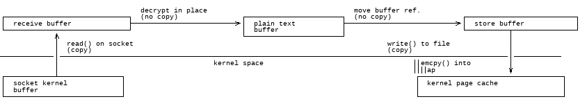
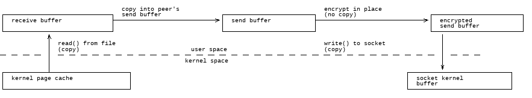
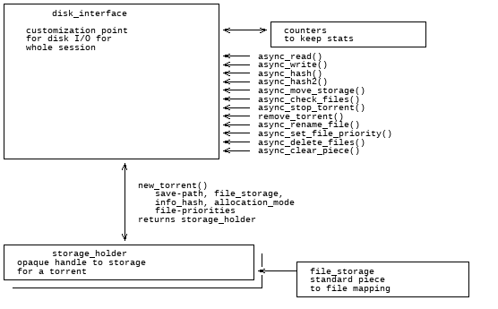

| Version: | 2.0.8 |
|---|
Table of contents
introduction
libtorrent is a feature complete C++ bittorrent implementation focusing on efficiency and scalability. It runs on embedded devices as well as desktops. It boasts a well documented library interface that is easy to use. It comes with a simple bittorrent client demonstrating the use of the library.
BitTorrent v2 is supported as of libtorrent 2.0. This replaces the previous merkle hash tree extension.
features
libtorrent is an ongoing project under active development. Its current state supports and includes the following features:
BitTorrent v2
Starting with version 2.0, libtorrent supports BitTorrent V2 (as specified in BEP 52). BitTorrent V2 introduces a new format for .torrent files, which generally has a smaller info-dict than the original format. The .torrent files still contain piece hashes by default, but they can also be downloaded from peers.
- Files are organized in a directory structure, instead of listing full paths. Torrents that have a lot of files in deep directory structures will use a lot less space to represent that structure in a v2 torrent.
- Piece hashes are organized in a merkle hash trees per file, and only the roots of the trees are included in the .torrent file. The actual hashes are delivered by peers.
The hash tree allows validating payload received from a peer immediately, down to 16 kiB blocks. In the original bittorrent protocol a whole piece would have to be downloaded before it could be validated against the hashes.
The fact that each file has its own hash tree, and that its leaves are defined to be 16 kiB, means that files with identical content will always have the same merkle root. This enables finding matches of the same file across different torrents.
The new format for torrent files is compatible with the original torrent file format, which enables hybrid torrents. Such torrents that can be used both as V1 and V2 and will have two swarms, one with V1 and V2 clients and one with only V2 clients.
Another major feature of the BitTorrent V2 protocol is that the SHA-1 hash function has been replaced by SHA-256.
extensions
- plugin interface for implementing custom bittorrent extensions without having to modify libtorrent
- supports trackerless torrents (using the Mainline kademlia DHT protocol) with some DHT extensions. BEP 5.
- supports the bittorrent extension protocol. See extensions. BEP 10.
- supports the uTorrent metadata transfer protocol BEP 9 (i.e. magnet links).
- supports the uTorrent peer exchange protocol (PEX).
- supports local peer discovery (multicast for peers on the same local network)
- multi-tracker extension support (supports both strict BEP 12 and the uTorrent interpretation).
- tracker scrapes
- supports lt_trackers extension, to exchange trackers between peers
- HTTP seeding, as specified in BEP 17 and BEP 19.
- supports the UDP-tracker protocol. (BEP 15).
- supports the no_peer_id=1 extension that will ease the load off trackers.
- supports the compact=1 tracker parameter.
- super seeding/initial seeding (BEP 16).
- private torrents (BEP 27).
- upload-only extension (BEP 21).
- support for IPv6, including BEP 7 and BEP 24.
- share-mode. This is a special mode torrents can be put in to optimize share ratio rather than downloading the torrent.
- supports the Magnet URI extension - Select specific file indices for download. BEP 53.
disk management
- can use multiple disk I/O threads to not have the disk block network or client interaction.
- supports verifying the SHA-1 hash of pieces in multiple threads, to take advantage of multi core machines.
- supports files > 2 gigabytes.
- fast resume support, a way to avoid the costly piece check at the start of a resumed torrent. Saves the storage state, piece_picker state as well as all local peers in a fast-resume file.
- queues torrents for file check, instead of checking all of them in parallel. resumes. This means it can resume a torrent downloaded by any client.
- seed mode, where the files on disk are assumed to be complete, and each piece's hash is verified the first time it is requested.
network
- a high quality uTP implementation (BEP 29). A transport protocol with delay based congestion control. See separate article.
- adjusts the length of the request queue depending on download rate.
- serves multiple torrents on a single port and in a single thread
- piece picking on block-level (as opposed to piece-level). This means it can download parts of the same piece from different peers. It will also prefer to download whole pieces from single peers if the download speed is high enough from that particular peer.
- supports http proxies and basic proxy authentication
- supports gzip tracker-responses
- can limit the upload and download bandwidth usage and the maximum number of unchoked peers
- possibility to limit the number of connections.
- delays have messages if there's no other outgoing traffic to the peer, and doesn't send have messages to peers that already has the piece. This saves bandwidth.
- selective downloading. The ability to select which parts of a torrent you want to download.
- ip filter to disallow ip addresses and ip ranges from connecting and being connected.
- NAT-PMP, PCP and UPnP support (automatic port mapping on routers that supports it)
- implements automatic upload slots, to optimize download rate without spreading upload capacity too thin. The number of upload slots is adjusted based on the peers' download capacity to work even for connections that are orders of magnitude faster than others.
highlighted features
disk I/O
All disk I/O in libtorrent is done asynchronously to the network thread, by the disk io threads. Files are mapped into memory and the kernel's page cache is relied on for caching disk blocks. This has the advantage that the disk cache size adapts to global system load and memory pressure, maximizing the cache without bogging down the whole system. Since memory mapped I/O is inherently synchronous, files can be accessed from multiple disk I/O threads.
Similarly, for write requests, blocks are queued in a store-buffer while waiting to be flushed to disk. Read requests that happen before a block has been flushed, will short circuit by picking the block from the store buffer.
Memory mapped files are available on Windows and posix 64 bit systems. When building on other, simpler platforms, or 32 bits, a simple portable and single-threaded disk I/O back-end is available, using fopen() and fclose() family of functions.
network buffers
On CPUs with small L2 caches, copying memory can be expensive operations. It is important to keep copying to a minimum on such machines. This mostly applies to embedded systems.
In order to minimize the number of times received data is copied, the receive buffer for payload data is received directly into a page aligned disk buffer. If the connection is encrypted, the buffer is decrypted in-place. The buffer is then moved into the disk cache without being copied. Once all the blocks for a piece have been received, or the cache needs to be flushed, all the blocks are passed directly to writev() to flush them in a single system call. This means a single copy into user space memory, and a single copy back into kernel memory, as illustrated by this figure:
When seeding and uploading in general, unnecessary copying is avoided by caching blocks in aligned buffers, that are copied once into the peer's send buffer. The peer's send buffer is not guaranteed to be aligned, even though it is most of the time. The send buffer is then encrypted with the peer specific key and chained onto the iovec for sending. This means there is one user space copy in order to allow unaligned peer requests and peer-specific encryption. This is illustrated by the following figure:
piece picker
The piece picker is a central component in a bittorrent implementation. The piece picker in libtorrent is optimized for quickly finding the rarest pieces. It keeps a list of all available pieces sorted by rarity, and pieces with the same rarity, shuffled. The rarest first mode is the dominant piece picker mode. Other modes are supported as well, and used by peers in specific situations.
The piece picker allows to combine the availability of a piece with a priority. Together they determine the sort order of the piece list. Pieces with priority 0 will never be picked, which is used for the selective download feature.
In order to have as few partially finished pieces as possible, peers have an affinity towards picking blocks from the same pieces as other peers in the same speed category. The speed category is a coarse categorization of peers based on their download rate. This makes slow peers pick blocks from the same piece, and fast peers pick from the same piece, and hence decreasing the likelihood of slow peers blocking the completion of pieces.
The piece picker can also be set to download pieces in sequential order.
customizable file I/O
libtorrent's disk I/O implementation is customizable. That means a special purpose bittorrent client can replace the default way to store files on disk.
When implementing a bittorrent cache, it doesn't matter how the data is stored on disk, as long as it can be retrieved and seeded. In that case a new disk I/O class can be implemented (inheriting from the disk_interface) that avoids the unnecessary step of mapping pieces to files and offsets. The storage can ignore the file boundaries and just store the entire torrent in a single file (which will end up being all the files concatenated). The main advantage of this, other than a slight CPU performance gain, is that all file operations would be page (and sector) aligned. This enables efficient unbuffered I/O, and can potentially lead to more efficient read caching (using the built in disk cache rather than relying on the operating system's disk cache).
easy to use API
One of the design goals of the libtorrent API is to make common operations simple, but still have it possible to do complicated and advanced operations. This is best illustrated by example code to implement a simple bittorrent client:
#include <iostream> #include "libtorrent/session.hpp" // usage a.out [torrent-file] int main(int argc, char* argv[]) try { lt::session s; lt::add_torrent_params p; p.save_path = "./"; p.ti = std::make_shared<torrent_info>(argv[1]); lt::torrent_handle h = s.add_torrent(p); // wait for the user to end char a; std::cin.unsetf(std::ios_base::skipws); std::cin >> a; return 0; } catch (std::exception const& e) { std::cerr << ec.what() << std::endl; return 1; }
This client doesn't give the user any status information or progress about the torrent, but it is fully functional.
libtorrent also comes with python bindings.
portability
libtorrent runs on most major operating systems including:
- Windows
- macOS
- Linux
- BSD
- Solaris
It uses Boost.Asio, Boost.Optional, Boost.System, Boost.Multiprecision, Boost.Pool, Boost.Python (for bindings), Boost.CRC and various other boost libraries. At least version 1.70 of boost is required.
Since libtorrent uses Boost.Asio it will take full advantage of high performance network APIs on the most popular platforms. I/O completion ports on windows, epoll on Linux and kqueue on macOS and BSD.
libtorrent requires a C++11 compiler and does not build with the following compilers:
- GCC older than 5.4
- Visual Studio older than Visual Studio 15 2017 (aka msvc-14.1)